Published
Audience and user
People who would like to read more, but don't find it accessible enough, or who don't feel they have time in their day.
Client
IADT grad show final project
Date
May 17th, 2019


Scroll up
The daily commute can be the most frequently forgotten time of the day, where hours disappear through mindless scrolling. The journey you take every day on public transport can become part of a bigger journey, a StoryJourney. This is a serial short story app for public transport that adapts comforting aspects from both social media and printed books to form a hybrid suitable for the new generation of readers.
or down
Story Journey
Product design, UX design, UI design, Copywriting, Graphic design
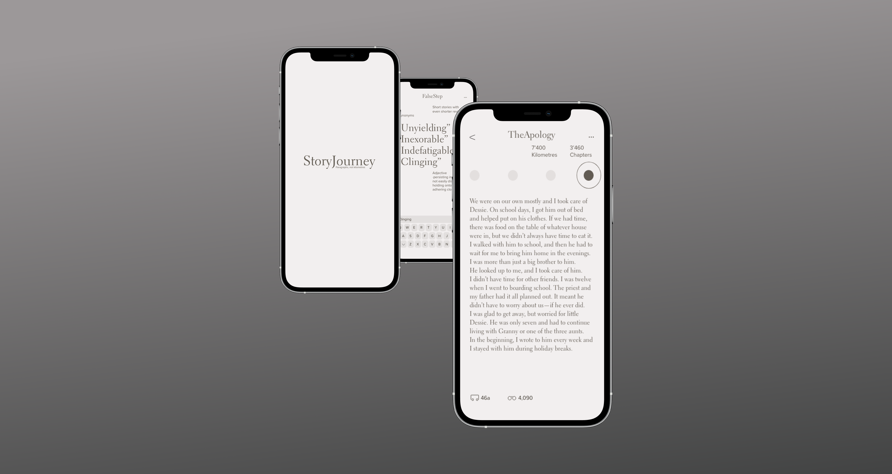
The app worked in conjunction with public transport modes. A short story was broken up into the stops the user intended to take that day to commute. The pieces of the story were revealed at each stop along their journey.
One short story was released everyday to the public, and was featured on the home screen of the app. The artwork for each story is typographical to celebrate language and words.
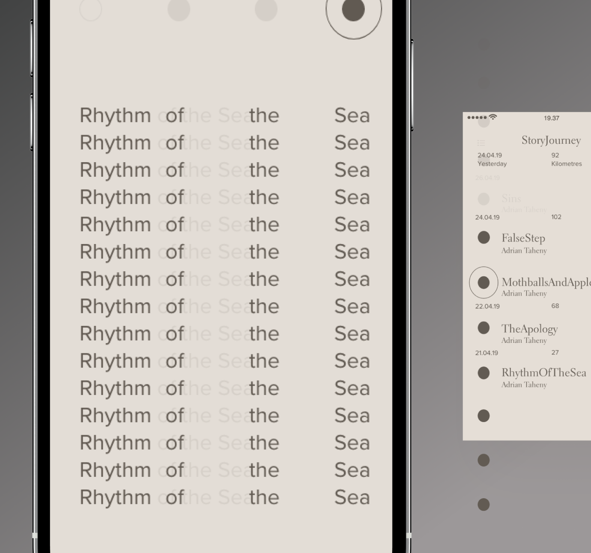
To engage and educate the users, a social aspect was brought in. User have the ability to share new words they discover, to display their inner word nerd out to the world.
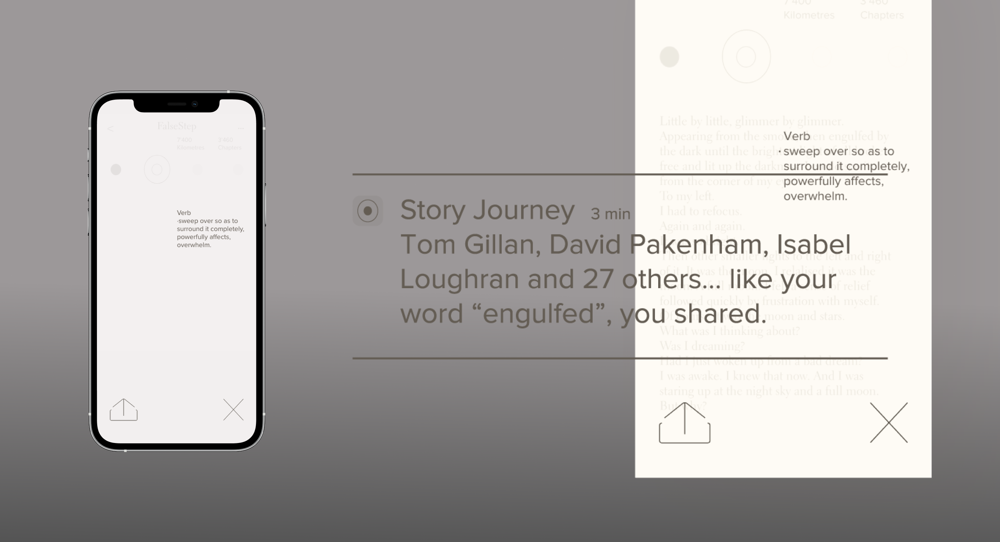
As the user starts their public transport voyage, the stops are visable on the screen so a mistaken trip to the other side of the city doesn’t occur. And by linking with your social media platforms, any friends reading the story will pop up on screen too.
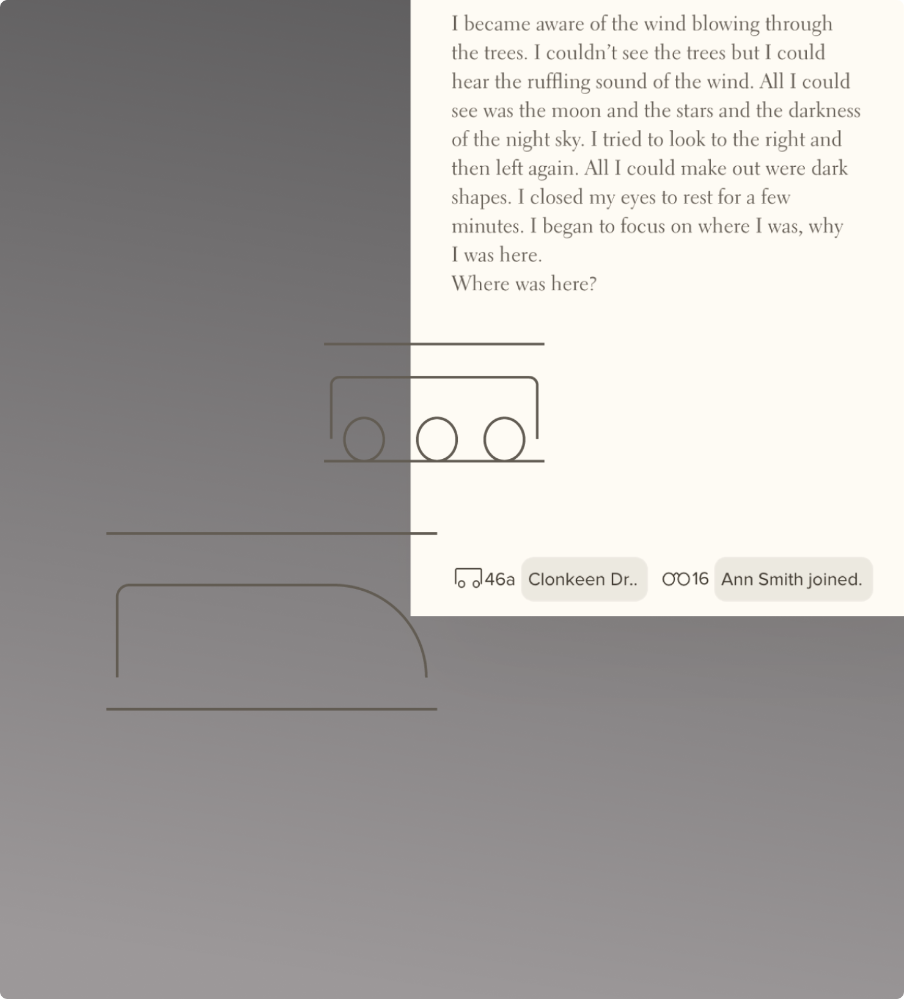
The visual design of the app was focused on simulating an analogue reading experience which actively goes against most social media apps today. This was done to push the app into the alternative catagory, solving the problem of the harsh bright reading experience. Mellow warm creams and browns were used, along with a legible serif typeface.
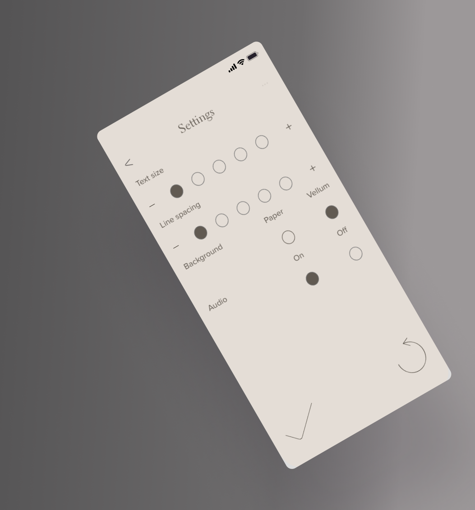
The story was broken down into sections determined by the users journey length.
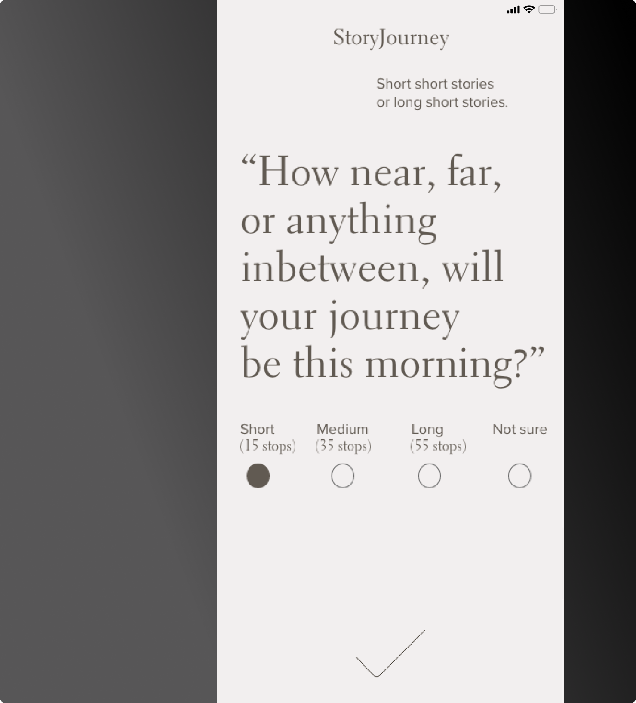
Notifications were used when milestones were hit, or if a preference was noticed. Users were also asked to give feedback, like the “One word review” asking the users to review the story using only one word. The reviews are visible straight away as you open the app.
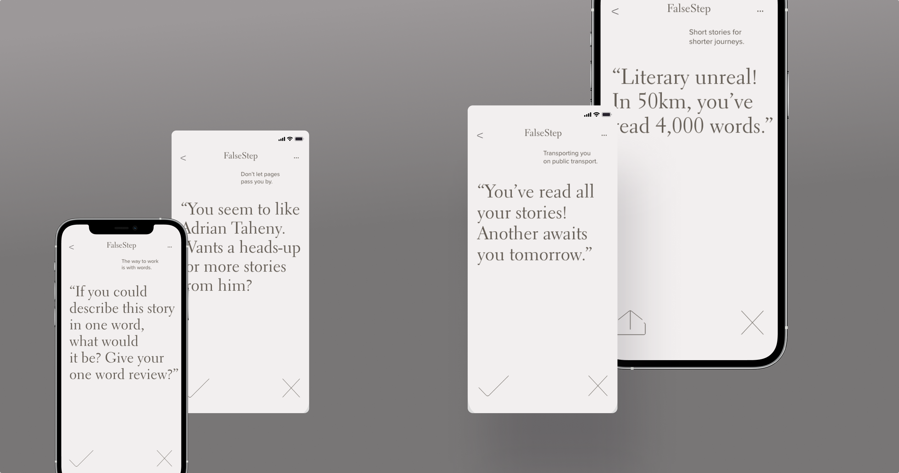
Traffic seemed to cause an issue to this system, so to avoid the user exiting, pop-up games were included.
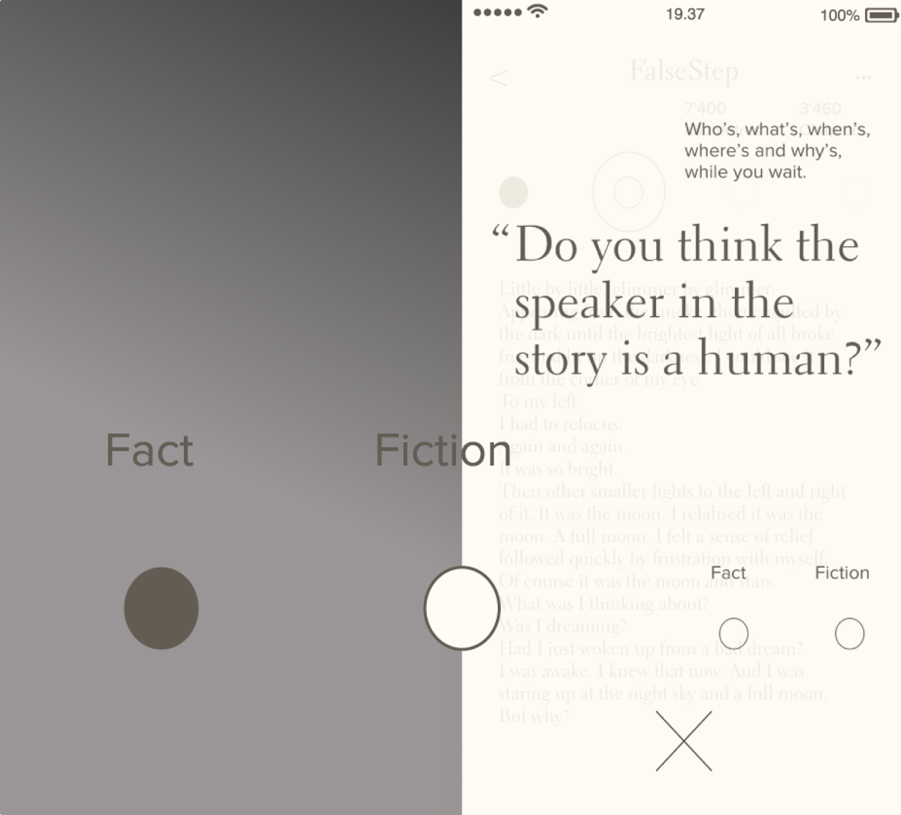
Printed posters and digital posters were created to advertise the app. The typographic treatment were spaces between words were removed was to add a playful aspect the the minimal design, and to communicate the adding of parts together to make a whole thing, like the story sections.
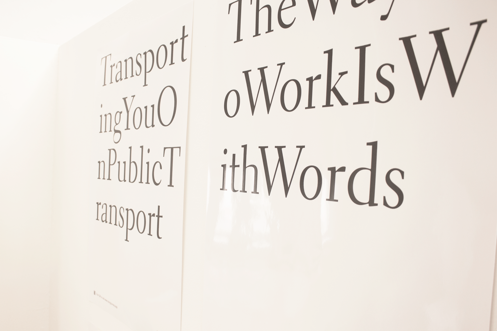
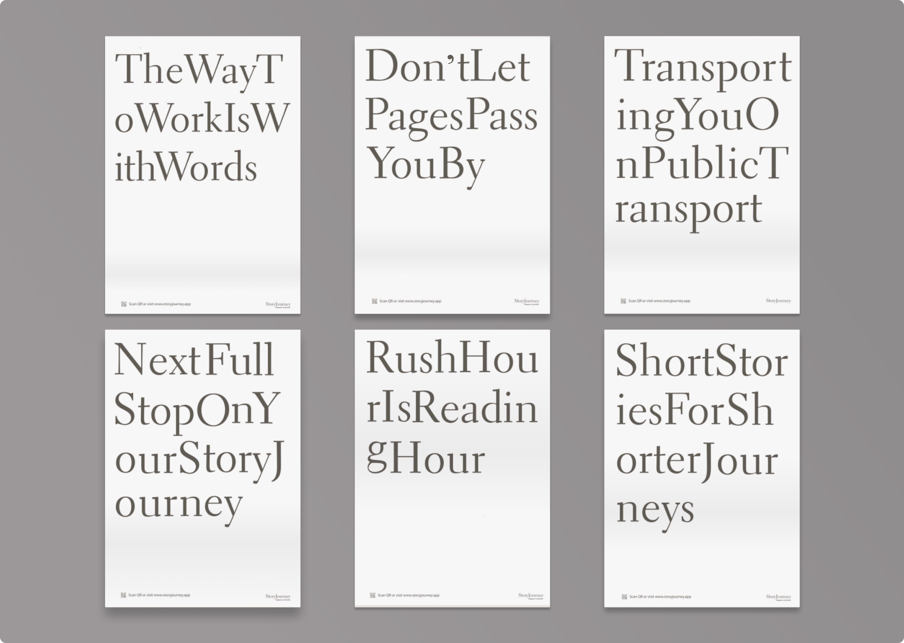
A website acted as an online information point, as well as housing the campaign created to promote the app. Word on the Street (#WOTS) was a public participation campaign were an extract of the story the day beofre was released on the digital posters throughout the country. This was to promote and attract attention the app.
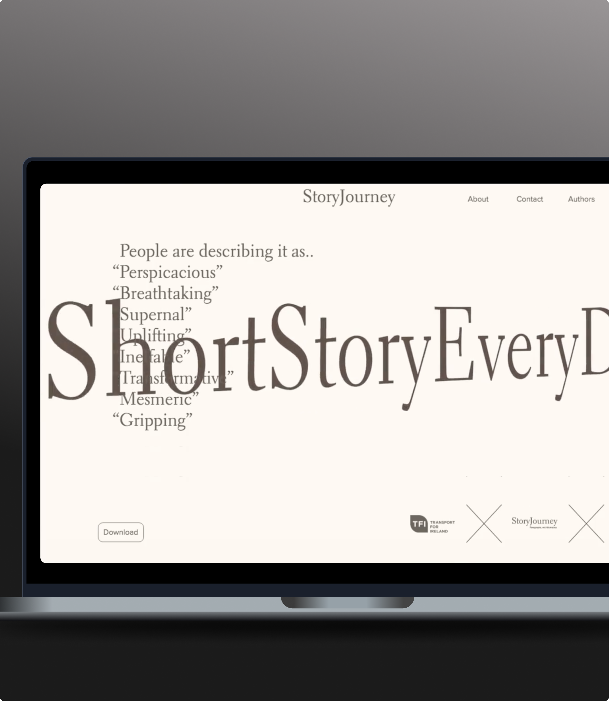
Learning was a big part of the app and it’s aims, so the website included some tasters of the apps features.
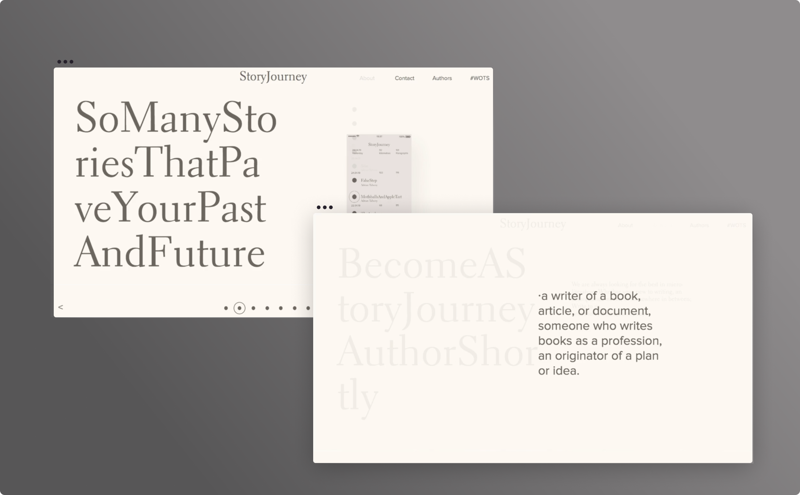